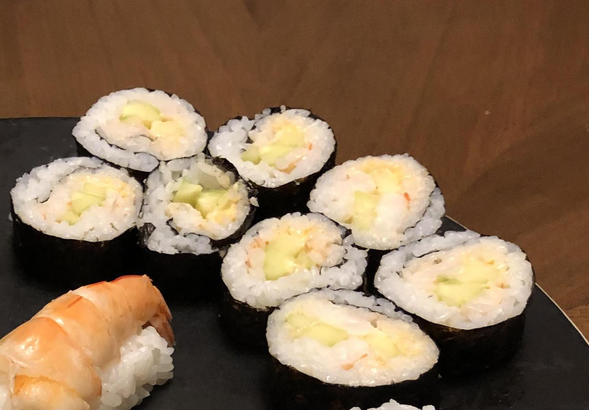

Based on https://web.archive.org/web/20140814022520/http://fromgatetoplate.com/2014/04/14/spicy-shrimp-sushi-rolls
Personal rating: 1 / 5

cooked shrimp, chopped
cucumber
mayo
Sriracha
sushi rice
wasabi
nori